Visual storytelling comes in many forms.
I practice photography, graphic design, and ux/ui because I think each has something unique to offer in the art and skill of telling a story and enabling others to build their own stories.
The images in this portfolio use light and shadow, among other elements, to encourage feelings of peace, wonder, and appreciation for life and creation in its different forms. If you look for it, beauty, purpose, and connection can be found, even in the smallest of details.

 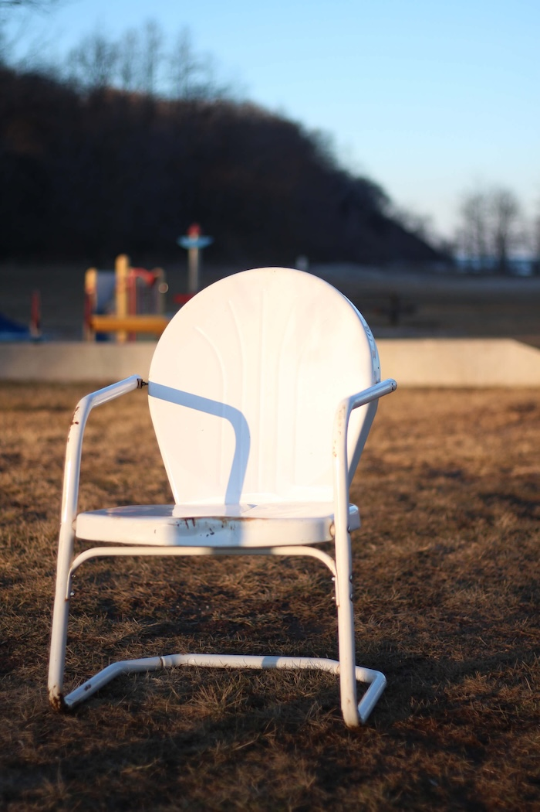
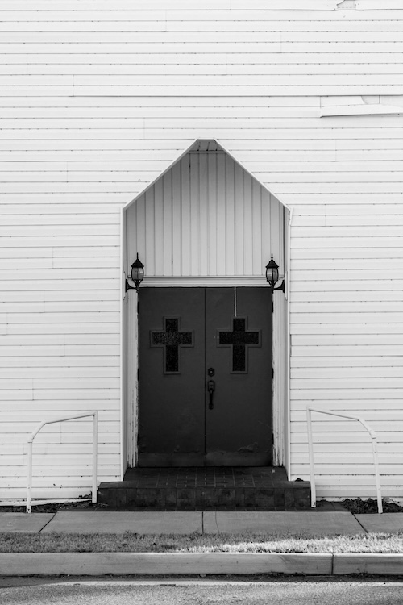
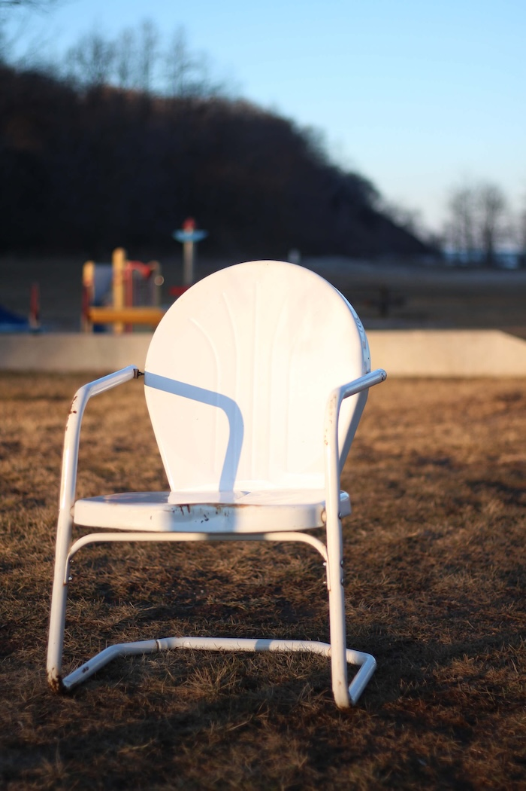
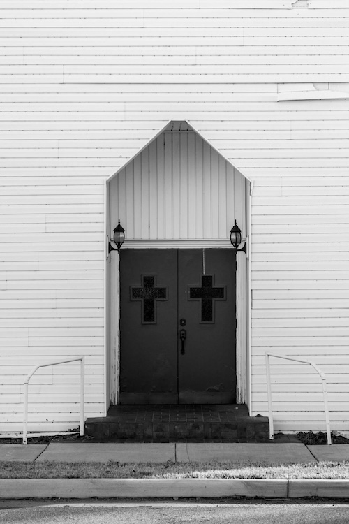


 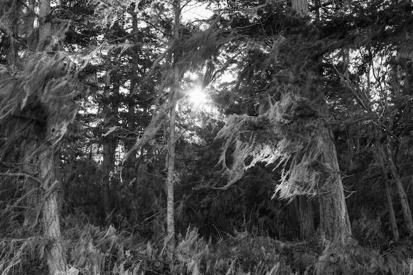
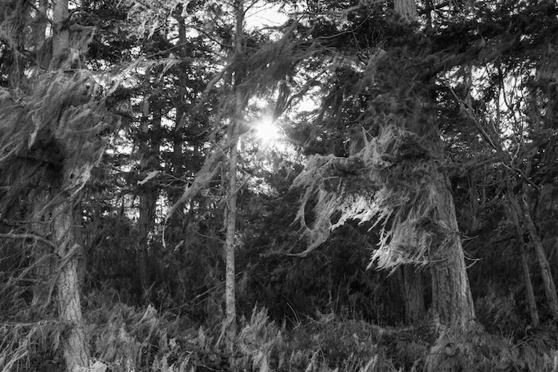
 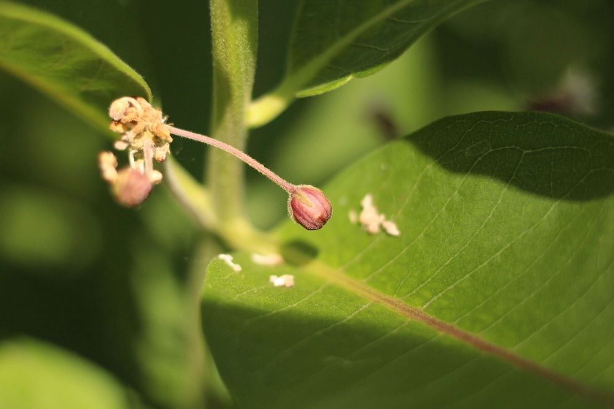
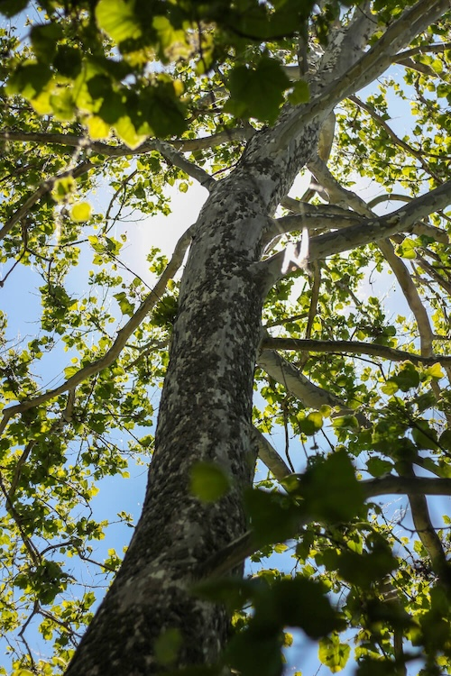
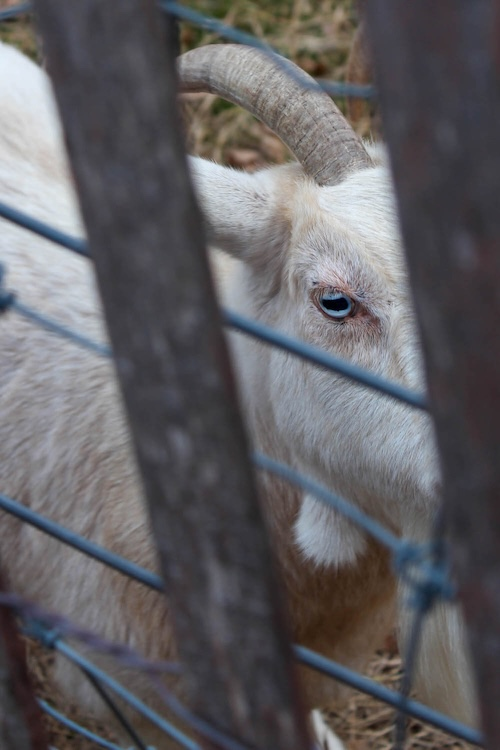
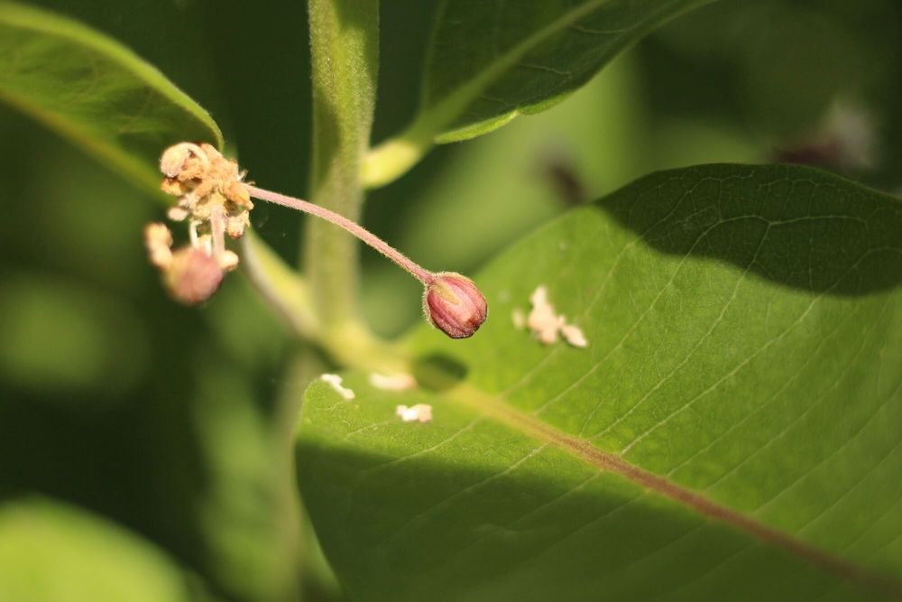
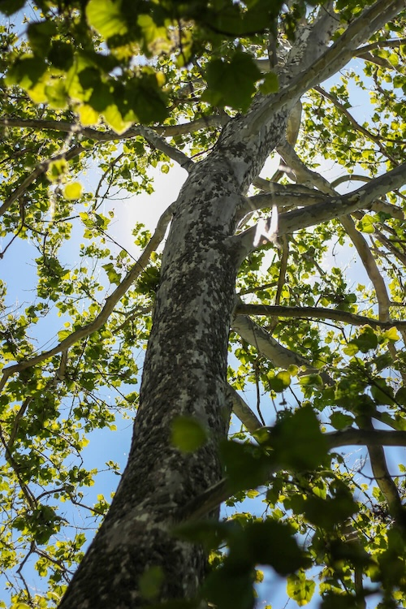
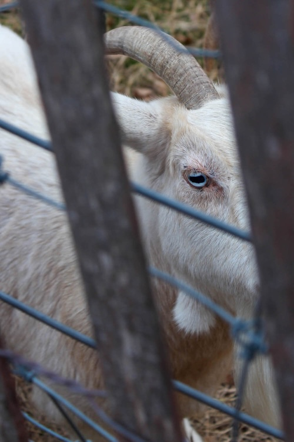
 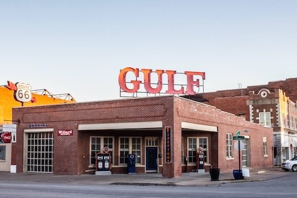
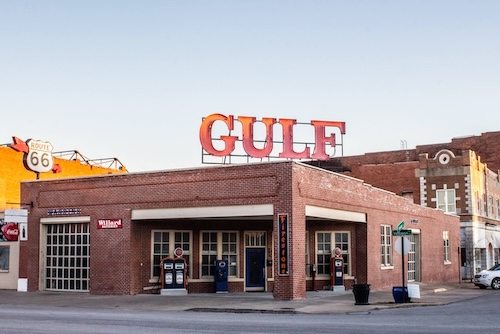


 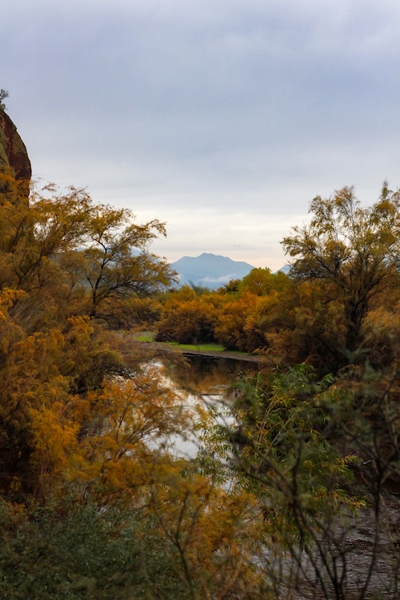
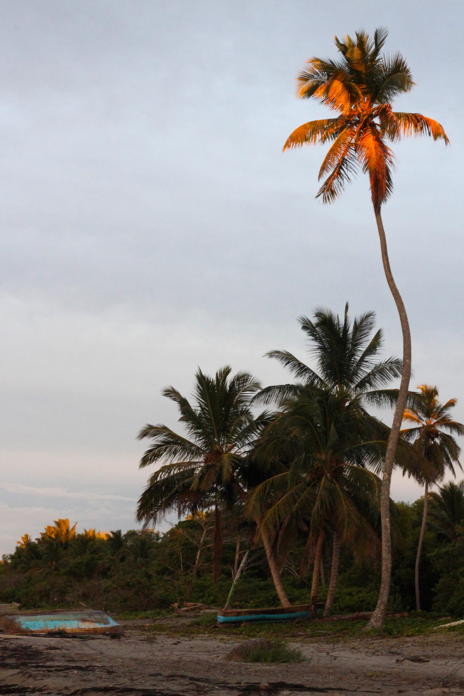
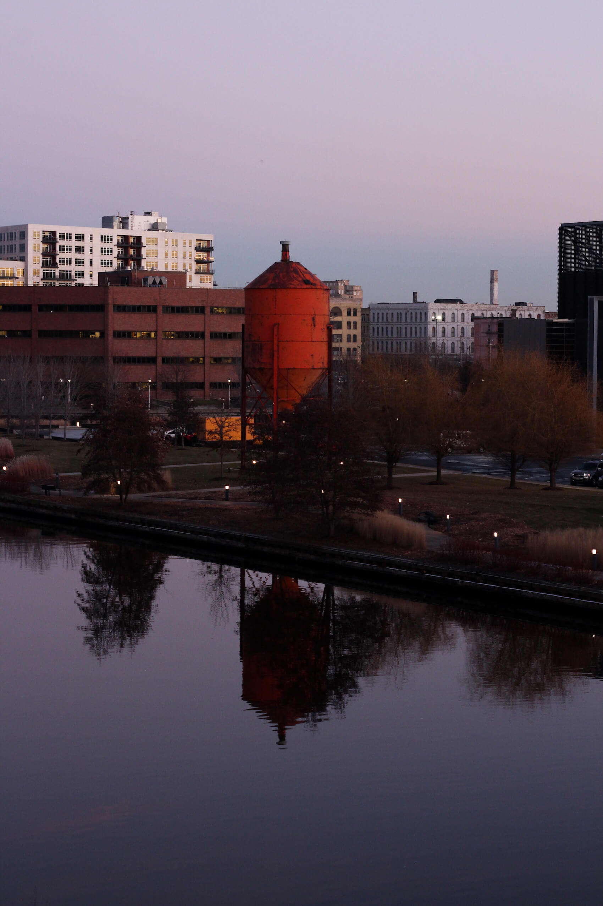
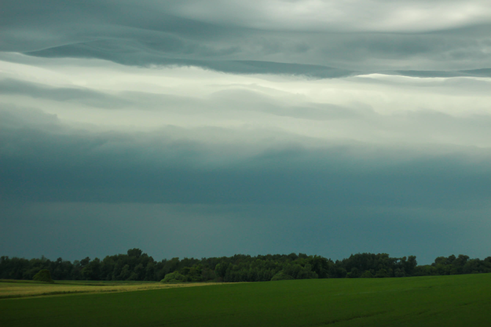
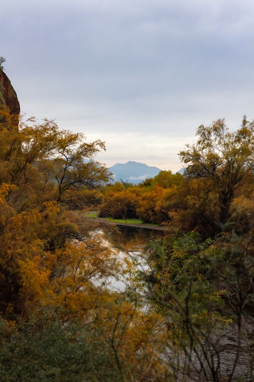
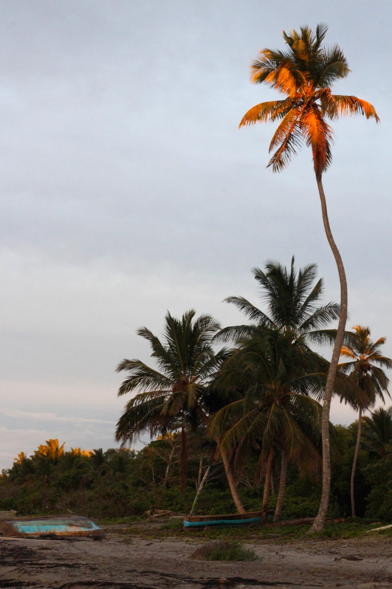
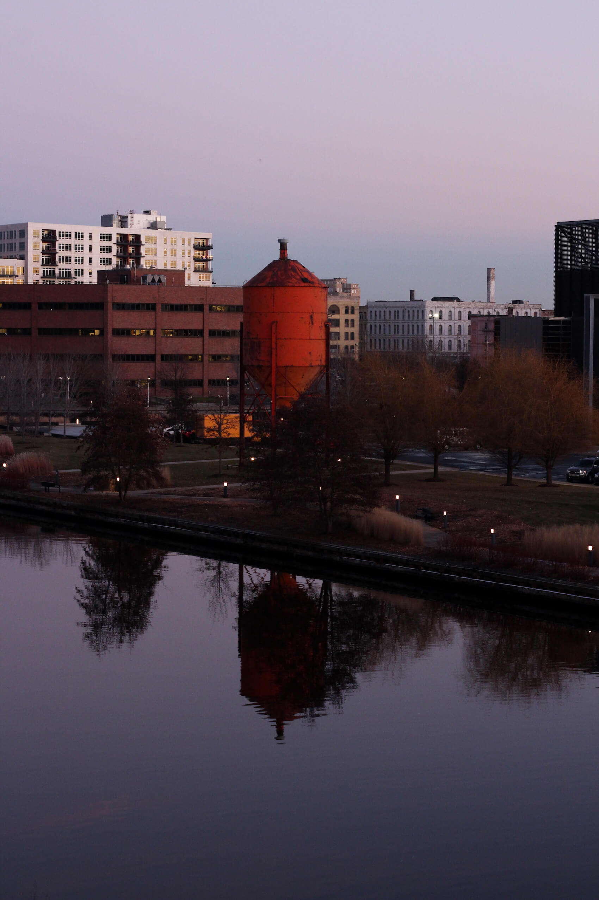
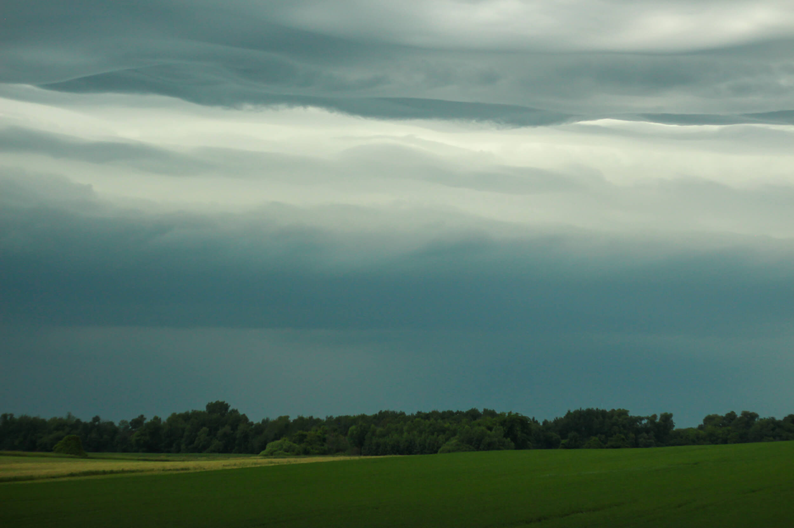

1. PSA Print Campaign
I created three posters for a potential PSA print campaign. The purpose is to influence viewers through positive messaging and imagery to test their smoke alarms to make sure they are working.
One of the biggest reasons people do not test their smoke alarms is because they assume they are working. However, this assumption can have dangerous consequences. The Red Cross states that "Roughly 3 out of 5 fire deaths happen in homes with no smoke alarms or no working smoke alarms".
In each poster, I used relatable safe assumptions and combined a smoke alarm with objects related to the assumptions. I contrasted the safe assumption with the dangerous assumption of assuming your smoke alarms work. I also included a QR code on each poster that is linked to Red Cross's webpage with more information about smoke alarms.